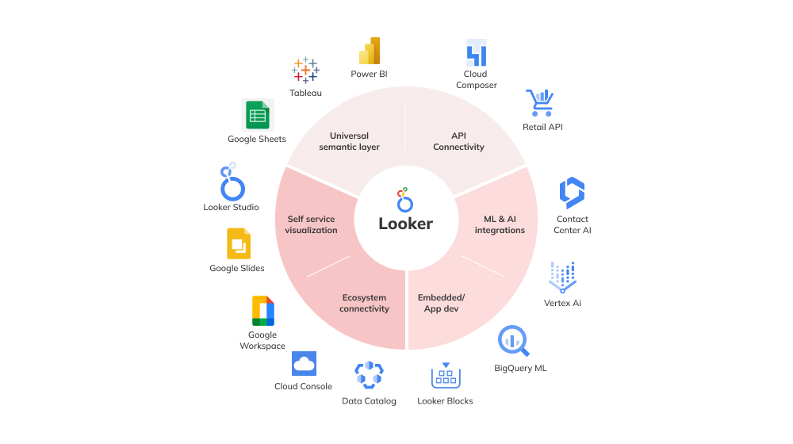

BÁO CÁO SO SÁNH POWER BI VÀ LOOKER STUDIO
1. Tổng quan về hai công cụ
| Tiêu chí | Power BI | Looker Studio |
|---|---|---|
| Nhà phát triển | Microsoft | |
| Năm ra mắt | 2015 | 2016 |
| Mục tiêu chính | Phân tích dữ liệu | Trực quan hóa đơn giản |
| Môi trường hoạt động | Desktop + Web | Web-based |
2. Giao diện người dùng
Power BI
Giao diện mạnh mẽ, hỗ trợ drag-and-drop biểu đồ, bảng, slicer,...
Looker Studio
Giao diện đơn giản, tương tự Google Slides, tích hợp tốt với các dịch vụ Google.
3. Khả năng kết nối dữ liệu
| Tiêu chí | Power BI | Looker Studio |
|---|---|---|
| Nguồn dữ liệu | SQL Server, Excel, Web APIs,... | Google Sheets, BigQuery, Analytics,... |
| Số lượng nguồn | >150 | >800 (qua Connector) |
| Xử lý dữ liệu nâng cao | DAX, Power Query | Hàm tương tự Sheets |

4. Phân tích và trực quan hóa

| Tiêu chí | Power BI | Looker Studio |
|---|---|---|
| Dashboard | Chuyên nghiệp, nhiều biểu đồ | Đơn giản, cơ bản |
| Drill-down | Có | Có nhưng giới hạn |
| AI & ML | Smart Narrative, Q&A | Không |
5. Giá cả và triển khai
| Tiêu chí | Power BI | Looker Studio |
|---|---|---|
| Phiên bản miễn phí | Có (Desktop) | Có (hoàn toàn miễn phí) |
| Trả phí | Power BI Pro (~$10/user) | Looker nâng cao (trả phí) |
| Triển khai | Cài đặt hoặc Web | Chạy trình duyệt |
6. Ưu & Nhược điểm
| Công cụ | Ưu điểm | Nhược điểm |
|---|---|---|
| Power BI | Phân tích mạnh, biểu đồ đa dạng, có AI | Phức tạp, có phí nếu chia sẻ rộng |
| Power BI | Hỗ trợ nhiều nguồn dữ liệu, khả năng xử lý mạnh với luồng dữ liệu lớn | Yêu cầu học tập và đào tạo bài bản, chi phí cao hơn |
| Looker Studio | Dễ dùng, miễn phí, tích hợp Google,dễ dàng sử dụng cho người mới | Giới hạn tính năng nâng cao |
| Looker Studio | Dễ dàng chia sẽ các thông tin thông qua share dirve và mail | Với lượng dữ liệu lớn thì dashboard sẽ bị chậm |